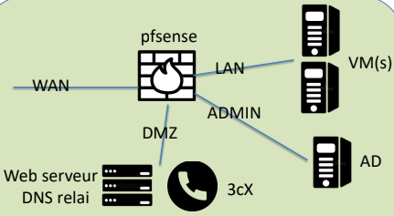
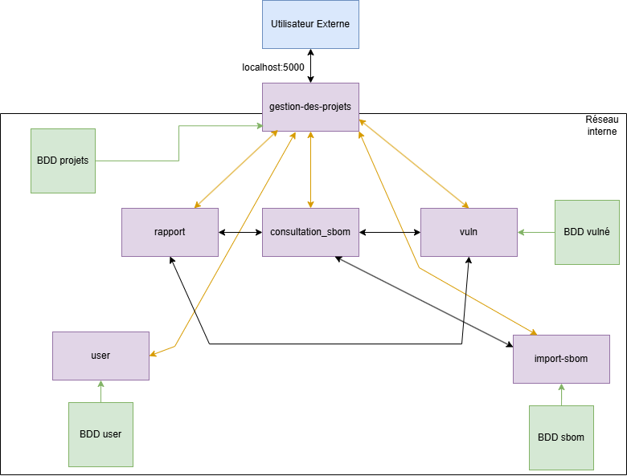
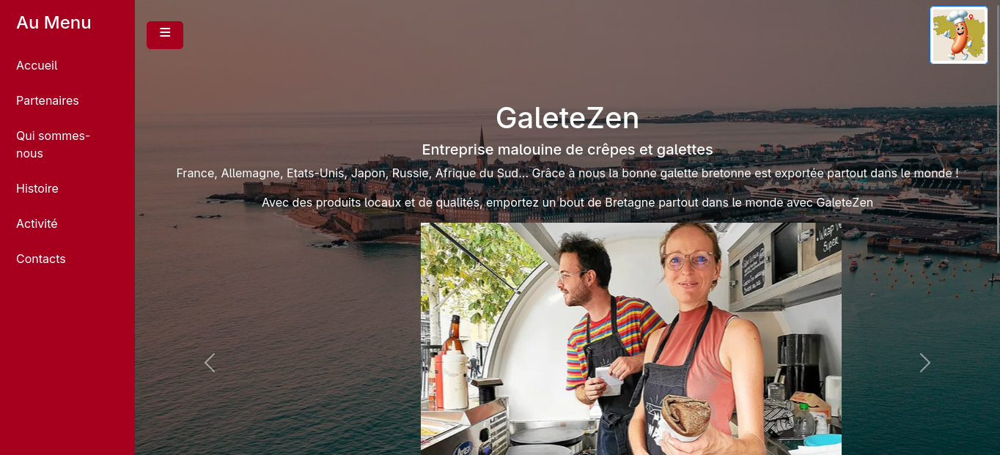
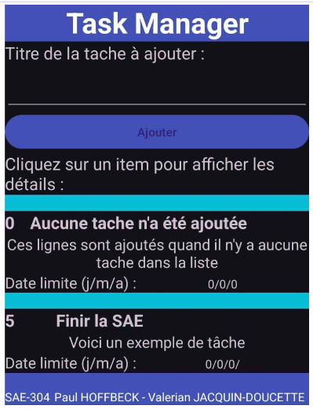
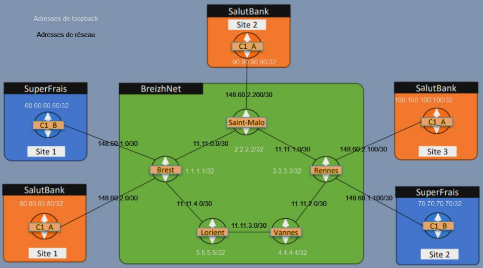
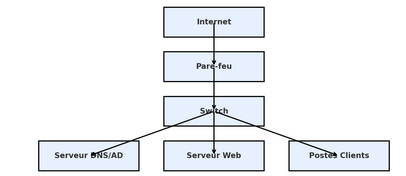
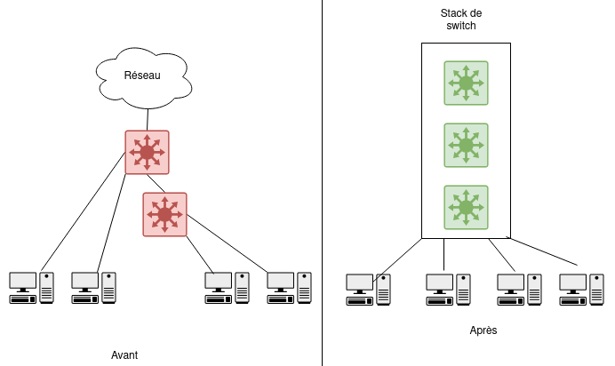

1. Projets Scolaires
Ces projets ont été réalisés dans le cadre de mon IUT afin de valider l'acquisition de compétences techniques et transversales. Ils combinent mise en œuvre pratique, rédaction de rapport et soutenance orale.
Ces projets ont été réalisés dans le cadre de mon IUT afin de valider l'acquisition de compétences techniques et transversales. Ils combinent mise en œuvre pratique, rédaction de rapport et soutenance orale.
Le parcours Développement et Cloud choisi en deuxième année m'a permis de réaliser des projets centrés sur la virtualisation et la conteneurisation.
Conception et déploiement d'un réseau local comprenant un pare-feu, un serveur DNS/AD, un serveur web et plusieurs postes clients.
Développement d'une application basée sur des micro-services conteneurisés (Docker) pour gérer et visualiser les SBOM des projets.
Création d'un site vitrine et d'un intranet en PHP/HTML/CSS avec gestion d'utilisateurs et sécurité intégrée.
Application Android en Java avec fonctions d'agenda et de suivi, développée dans une approche orientée ergonomie et conception logicielle.
Conception d'un réseau multi-site intégrant tunnels VPN, routage IPv6 et documentation technique complète.
Déploiement d'un réseau d'entreprise complet avec DNS/AD, pare-feu et serveur web virtualisé.
Ces projets ont été réalisés en entreprise dans le cadre de mon stage de 2ème année et de mon alternance. Ils reflètent mes compétences techniques appliquées en contexte professionnel réel.
Modernisation du réseau d'un site industriel : remplacement de switchs, recâblage et mise à jour de documentation technique.
Configuration d'une solution SD-WAN pour améliorer la résilience et la flexibilité réseau.

En tant qu'ingénieur solution client, j'interviens sur la conception, le déploiement et le support d'infrastructures réseau, cloud et sécurité.
Design par : HTML5 UP
{kind=link}
{kind=link}
{kind=link}
{kind=link}
{kind=link}
{kind=link}
{kind=link}